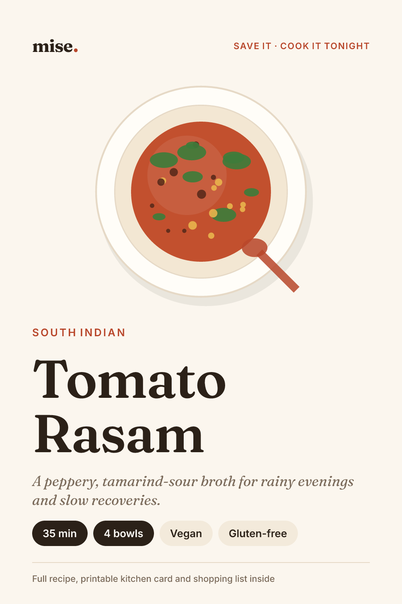
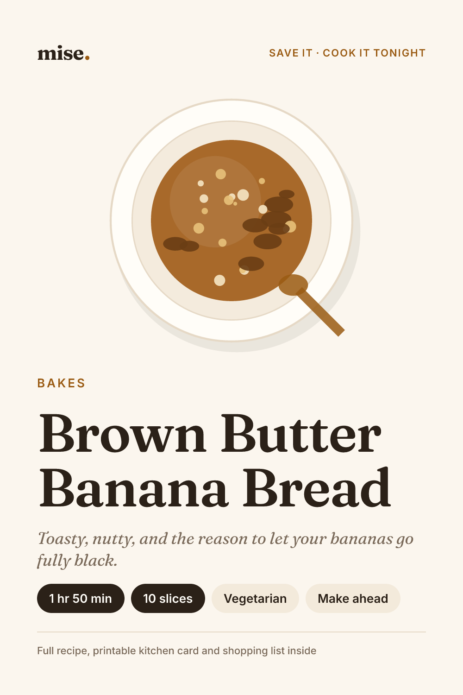

South Indian
Tomato Rasam
A peppery, tamarind-sour broth for rainy evenings and slow recoveries
Write a recipe once. Get a web page, a newsletter email, a printable kitchen card with a shopping list, and share images for every feed. Rendered with Hyper Elements.

South Indian
A peppery, tamarind-sour broth for rainy evenings and slow recoveries
South Indian
A peppery, tamarind-sour broth for rainy evenings and slow recoveries

Bakes
Toasty, nutty, and the reason to let your bananas go fully black